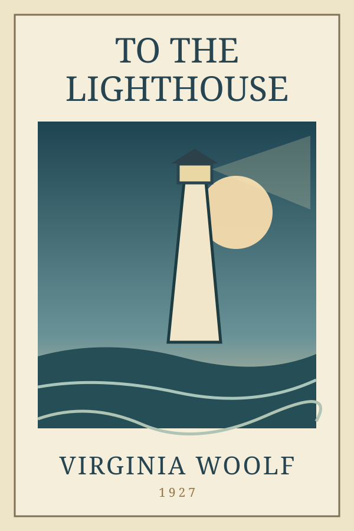

Ophelia’s Open Book · Read & Listen
Opening pages
Preparing the novel…

Virginia Woolf · 1927
On a Scottish island, a family’s longing to visit a distant lighthouse becomes a tender meditation on memory, love, time, and the mysteries of ordinary life.
Complete original novel · 42 sections · Public domain in the United States
Preparing the novel…